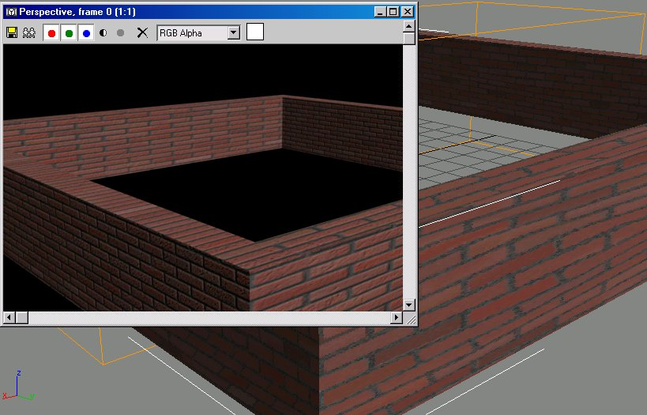
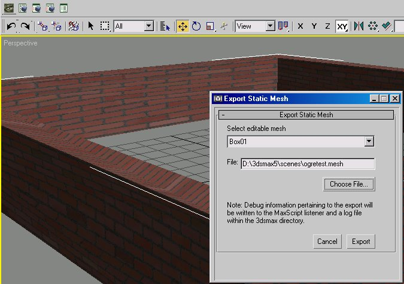
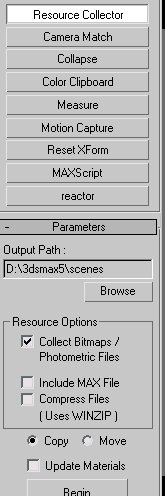
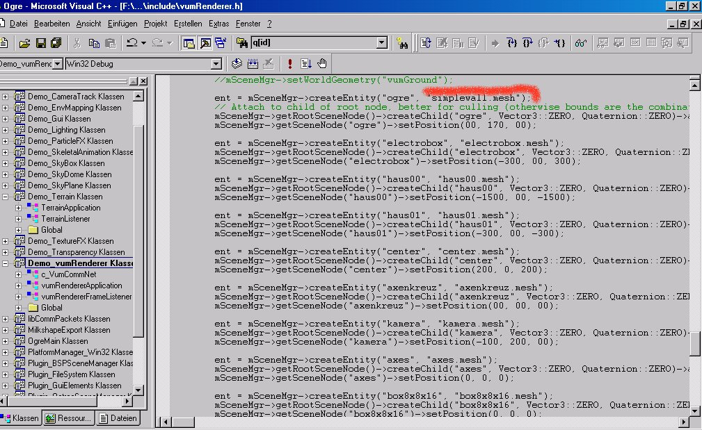
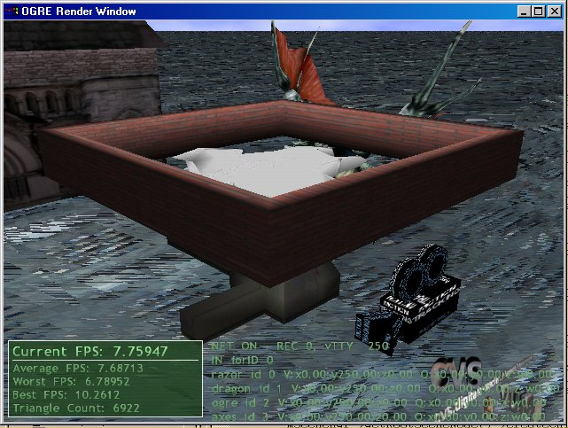
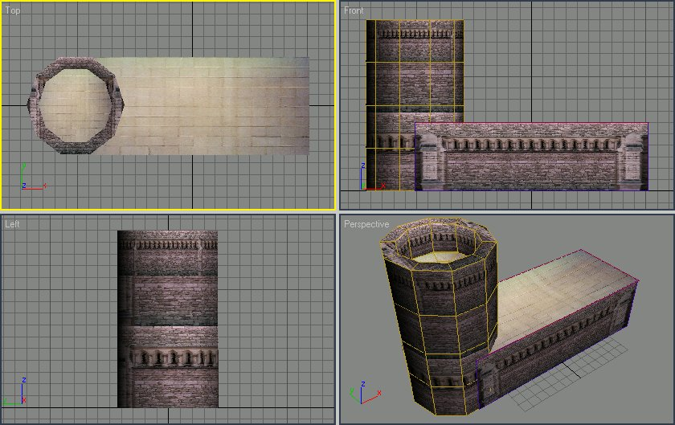

please correct the grammar ;)
How to Export an 3D-Max-File to OGRE
Create an Model
Make an Material
Make a good Texture-Mapping
Collapse all Objects to one Mesh
Make an Render to Texture (next time ;))
Get final Model with UVW-Texture (next time ;))
Export to OGRE
Load in OGRE
At first we create some objects like the picture below.
This simple object is without mapping-type and has one simple material. Now we have to make the UVW-Mapping (BOX-Mapping) on the object.

As we can see the mapping is not perfect with some different values in HxWxT it´s ok for this sample.
Now we collapseAll and go to the OGRE
maxScriptExporter.
The picture shows the OGRE dialog for one single static object. Unfortunatly the exporter can not more than that. I wish it could export an hole hierachy of an scene including cameras and lights.


The
last thing i do at this time is to collect all the textures i used
and copy it in the media dir. I use the resourcecollector from max.
Thats all for this subject of simple exporting an object.
Now we want to use it in OGRE in our own programm. The only thing is to write this:

As you can see it´s a very dirty hack in my testing program. I replace only the ogre head with the model of this simple wall.
The result is on my notebook the picture following

Next ist the export of an multiple object collapsed to an single an got an UVW-mapping like the models from Quake (MDL, MD2) etc.
